01About the Project
B by Lenskart is India's first AI-powered smart glasses, built by AjnaLens in partnership with Lenskart. Where conventional smart glasses stop at photos and video, B brings a full conversational AI into everyday use — talk to it, ask it, capture with it, all hands-free.
- Live AI, meeting recording, reminders, Look & Tell, nutrition logging, and a voice chatbot.
- The first product of its kind in India — no existing rulebook to design against.
02The Team
I lead a 9-person design team at AjnaLens — UI, UX and graphic design — all reporting to me across four parallel products, including B. On B specifically I work closely with three designers day to day.
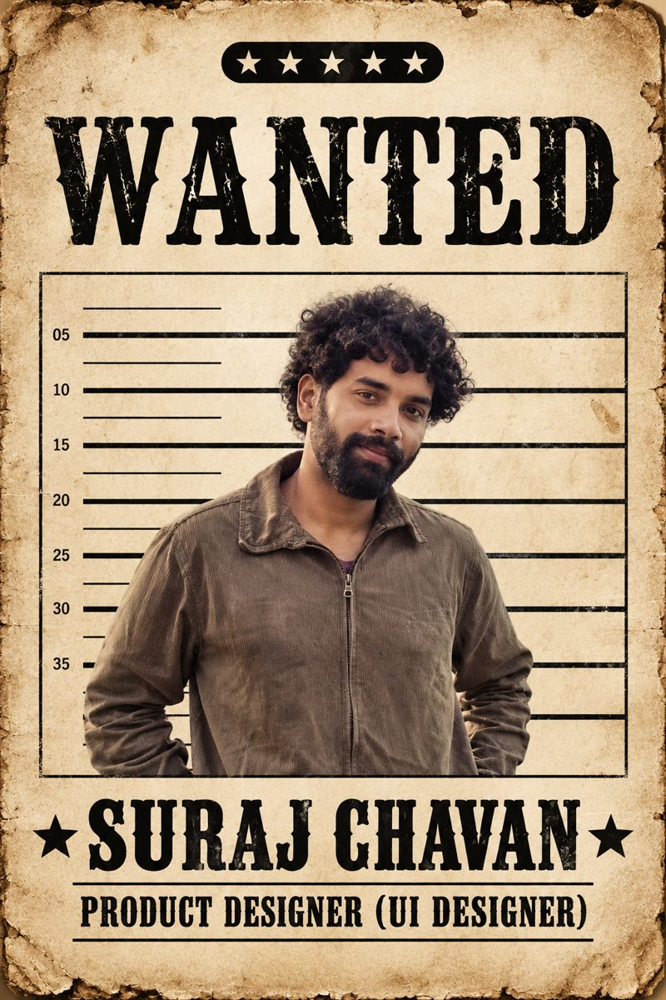
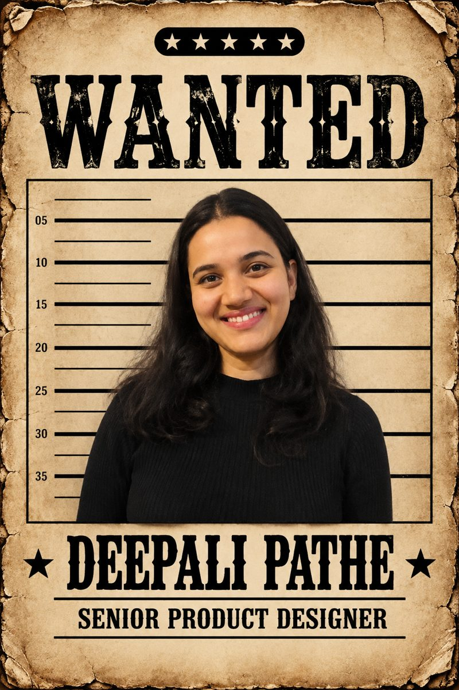
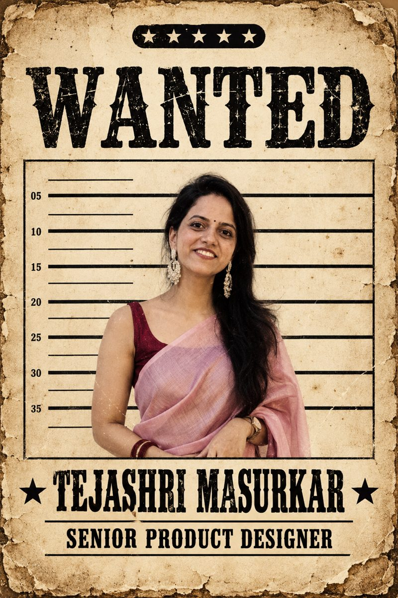
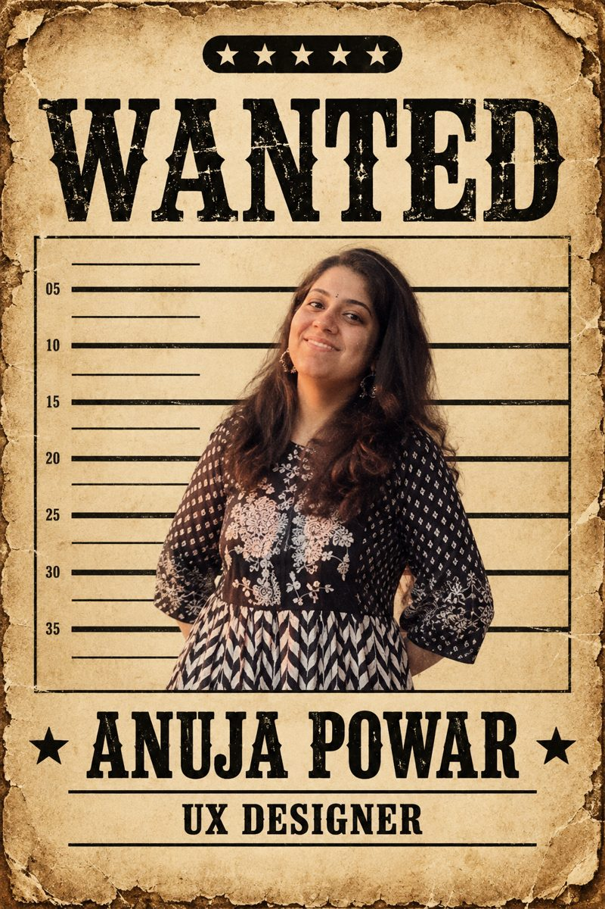
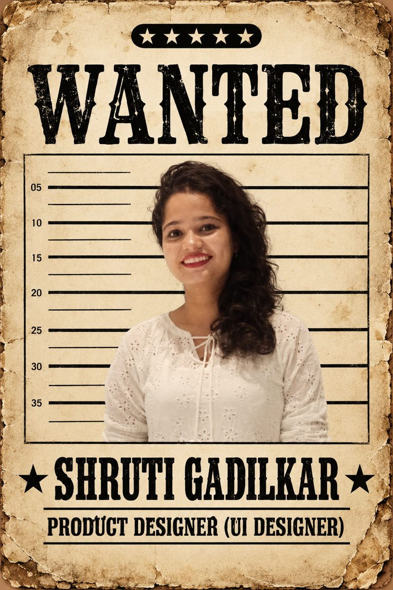
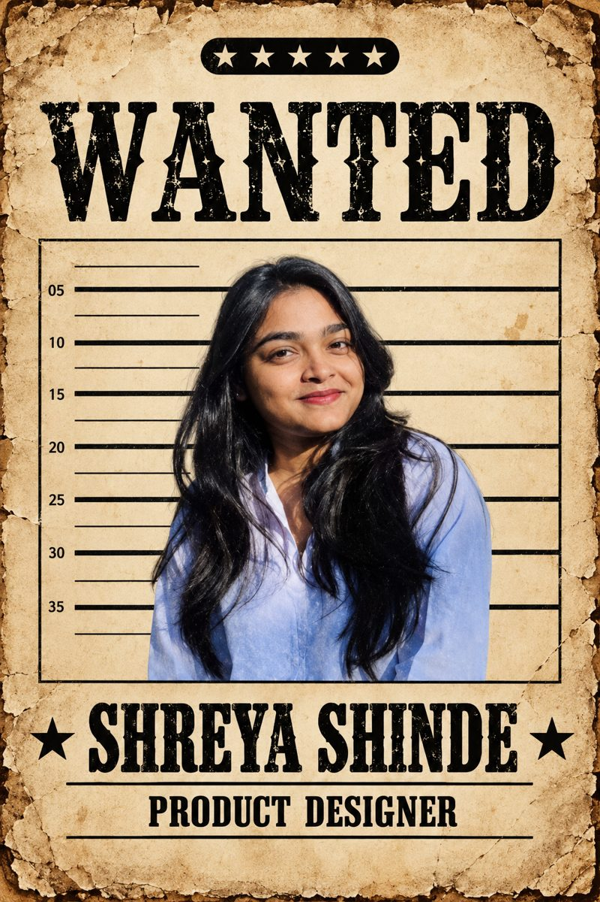
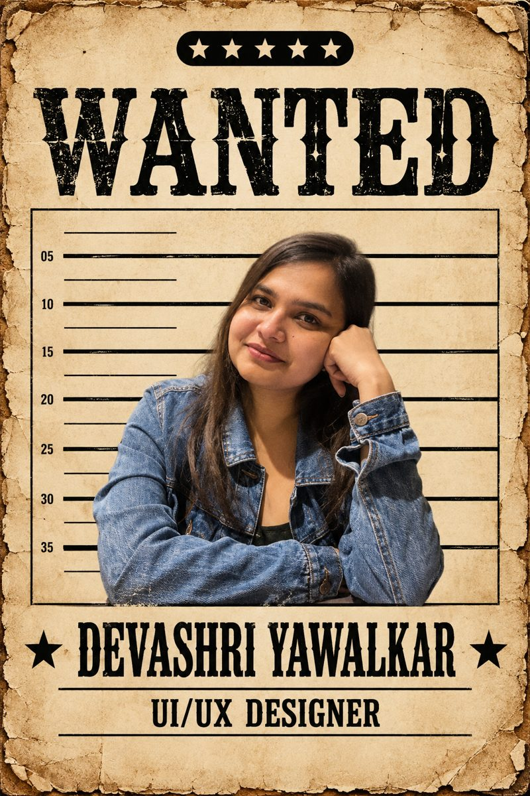
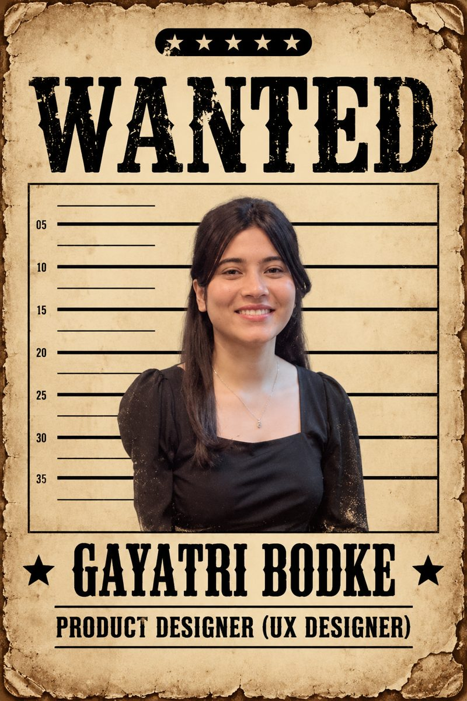
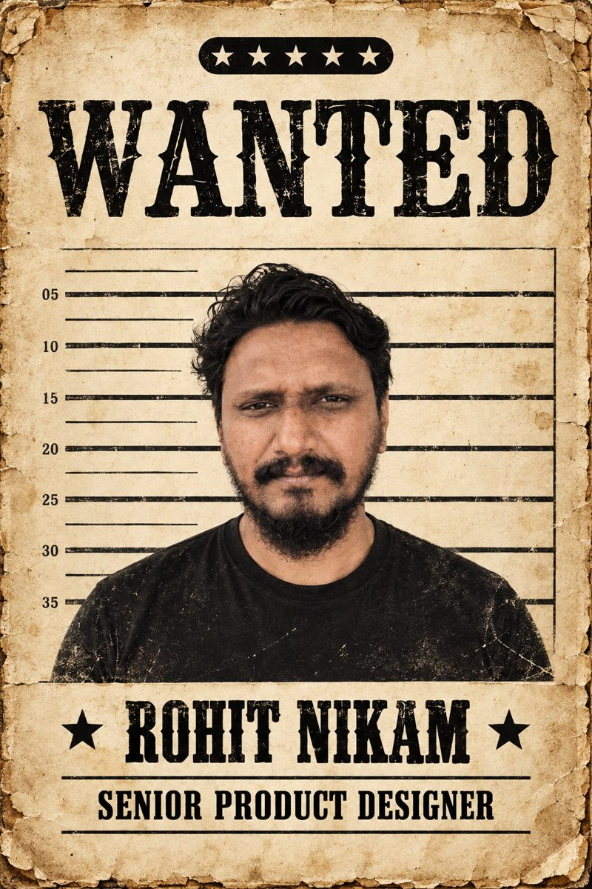
03My Role & Responsibility
When I joined, the design team was just 2 people. Over a year I grew it to 9 — hiring and mentoring largely first-time designers, while defining the processes that let the team scale with the company's growing product line.
- Set KRAs / KPIs, the review cadence, critique format and handoff standards.
- Led AI-driven design automation as a strategic priority across the team.
04My Project Role
This was one of the first products of its kind, with no rulebook to follow. My job was to understand what was technically feasible and what the product actually needed before design could begin — then run the stakeholder alignment that kept product, engineering, Lenskart and Google's Gemini team on the same page.
- Owned B's design process end-to-end, built to scale with the team and the product.
05UX Process
The core challenge: three parties — glasses, app and AI — needed to work as one system, across three interaction modes (voice, gesture, mobile). Every decision was made with the full ecosystem in mind.
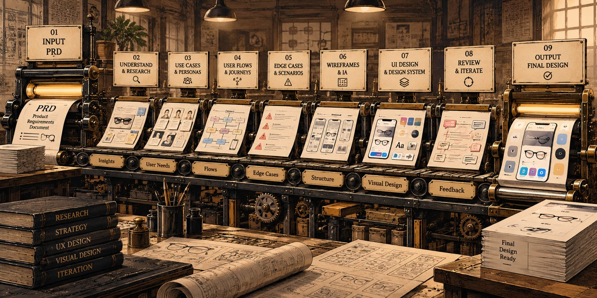
- Research: studied direct and indirect competitors — real-world behaviour, not just similar products.
- Process: PRD → Claude project → use cases, scenarios, flows, edge cases. Manual: 1–2 weeks per feature. With Claude: 3–4 days — manual review still verified every output.
- Gaps: day-in-the-life and journey mapping to surface missing scenarios.
- System behaviour: defined how the product responds when multiple flows run at once — directly feeding Parallel Processing.
- Testing: pre-defined test-case templates for consistency across rounds.
- Handoff: structured documentation kept developers and QA aligned.
06Parallel Processing
B supports 28 functions that can run simultaneously — nearly 800 possible combinations (28 × 29), each needing a behaviour decision. No existing product had solved this at this scale.
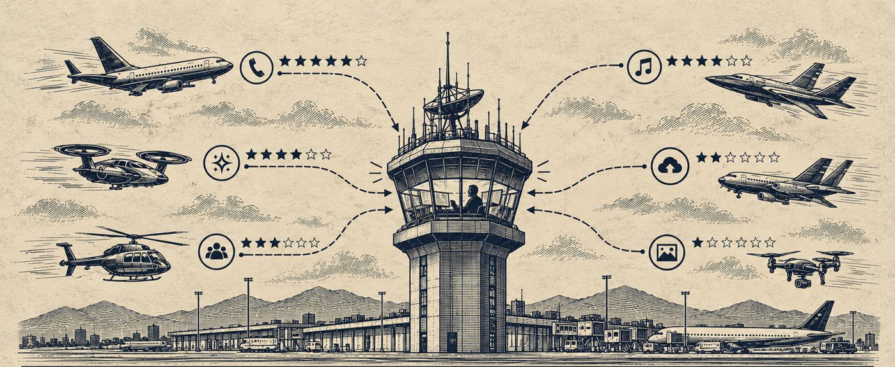
Approach: grouped the 28 functions into 7 categories (AI, Capture, Calls, Media Import, Notifications, Music, Firmware/System), then resolved every combination into one of four outcomes — Block, Interrupt, Cancel silently, Not applicable.
- Recording + incoming call → recording ends, call routes to the glasses, ending beep first.
- Music + incoming call → music interrupted immediately; calls top the priority stack.
- Auto-import + Live AI starts → import cancels silently, AI takes over.
This priority logic — calls above real-time actions, real-time above background tasks — became the rule referenced across every feature added afterward.
Deep dive · password protectedExplore the full interrupt model780 decisions · the priority ladder · every combination resolved Open case study →07Design System Creation
Nothing was decided at the start — not theme, not palette. The system covered three layers together: voice, glass gesture, and device (mobile + tablet).
- Voice: command feedback, error-state language, confirmation vs. tone logic.
- Glass gesture: LED colour meaning, blink patterns, gesture vocabulary mapped to features.
- App system: one shared component library across Android, iOS and tablet — dark theme locked with Lenskart's brand team, accessibility built in from the start.
- AI-assisted cleanup: built manually first, then documented via a Claude-generated reference used to automate library creation — a ~20% reduction in the system's footprint.
08UI Creation
With the system in place, I designed the app's core feature set — each built as part of one connected, voice-first experience.
09Handover Documentation
Designs went to engineering through Figma Dev Mode for specs and tokens — but I also built a structured handover document with Claude covering use cases, edge cases and error handling per component. That same document doubled as QA's test-case source, so testing didn't need to reconstruct logic that was already documented.